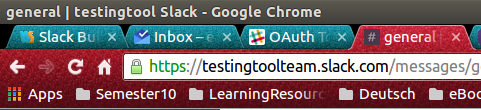

<div class="row">
    <div class="col-md-6 col-md-offset-3">
        <div>
        <h4>Domain</h4>
        <p>Copy your domain, as shown in the image below, *in this case it's "testingtoolteam" * then paste it to the domain textbox</p>
        
        </div>

        <div>
            <h4>Token</h4>
            <ol>
                <li>Go to the slack web API page found <a href="https://api.slack.com/web" target="_blank">here.</a> </li>
                <li>Below the authentication part, you will find the button "create token", unless you already have a token; then just go to the following link <a href="https://api.slack.com/docs/oauth-test-tokens">link</a></li>
                <li>Copy the token you get from slack and paste it in the token textbox</li>
            </ol>
        </div>

        <div>
            <h4>Date</h4>
            <p>State the point in time where older files are no longer needed. For example '30' means files that are older than 30 days from the present moment will be deleted.</p>
        </div>
    </div>
</div>


